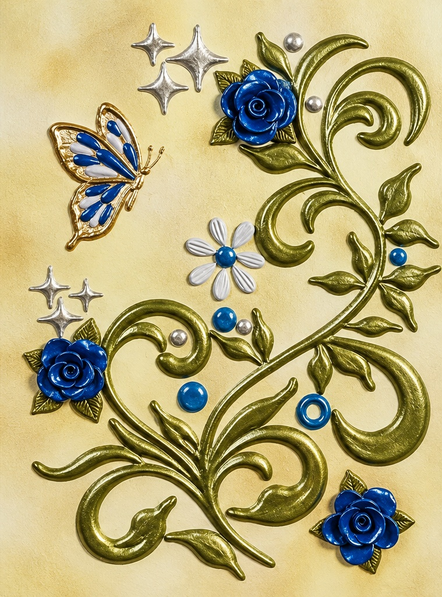

NICOLETA FILIP ART
ROSALES 1
Composición floral de tres rosas azules en alto relieve, rodeadas de tallos y hojas verdes curvilíneas, con una mariposa azul y plateada sobre un fondo claro texturizado.
Sobre la obra
ROSALES 1 presenta tres rosas azules situadas en diferentes zonas de la composición y enlazadas visualmente por tallos y hojas verdes de trazado curvo. Una mariposa azul con detalles claros, una pequeña flor blanca y azul y motivos plateados completan la pieza.
Presentación artística
Tres rosas azules, distribuidas entre la zona superior central, el lateral izquierdo y la parte inferior derecha, articulan esta composición floral. Las ramas verdes se curvan y entrelazan por el lienzo, creando un recorrido visual continuo. La mariposa azul y clara situada en la parte superior izquierda, junto con la pequeña flor de pétalos claros y centro azul y los detalles plateados, aporta contraste y equilibrio.
Ficha técnica
- Año
- 2026
- Dimensiones
- 30 × 40 cm
- Soporte
- Lienzo
- Técnica
- Técnica mixta: pasta de relieve y flores en alto relieve
- Categoría
- Floral
Si deseas recibir información sobre esta obra, puedes solicitarla directamente.
SOLICITAR INFORMACIÓN →